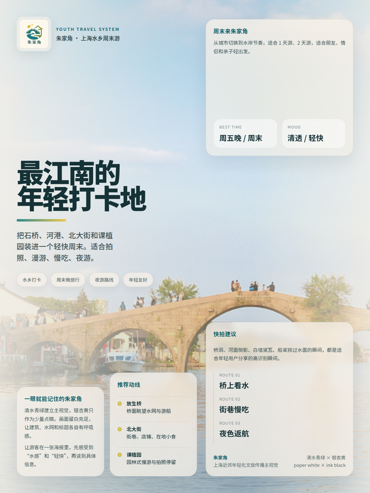
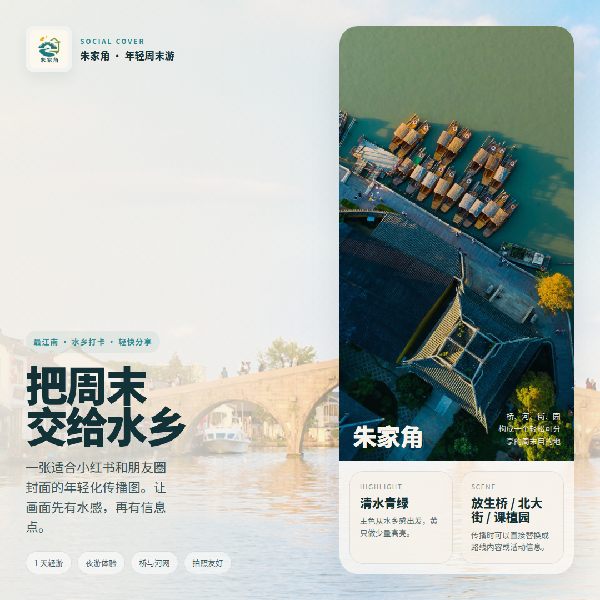
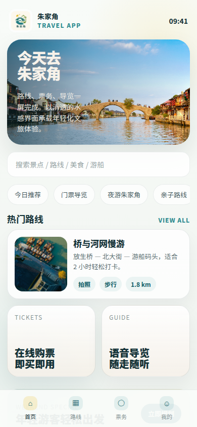

方案一 · 年轻化传播视觉系统
清水青绿与银杏黄构成高识别度的水感传播界面，面向年轻游客、小红书/朋友圈扩散与旅游 APP 场景，强调轻盈、现代、可分享。
modern / lively / shareable

core visual poster


核心意象
水网、放生桥、周末游、打卡路径、古镇焕新；视觉重点落在“可参与的江南”，更像一套面向社媒传播的旅游内容系统。
色彩
清水青绿
湖水青
银杏黄
宣纸白
字体
Display / Body
Noto Sans SC · Heavy / Regular
应用侧重
Logo、主视觉海报、社媒传播图、宣传册、旅游 APP 首页概念。整体偏轻、偏快、偏移动端阅读。